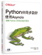
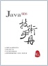
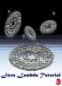
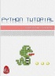
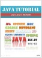

OPENHOME.CC
我是一隻弱小的毛毛蟲，想像有天可以成為強壯的挖土機，擁有挖掘夢想的神奇手套！
泛談文章
CodeData 專欄
程式人專欄
（連載中...）
Twitter 語錄
（不定時更新）
初心者之路
（尚無更新）
非關語言
運算隨想
（2021/12 更新）
常見程式演算
（2021/12 更新）
漫談模式
（2022/01 更新）
亂碼 1/2
（2019/12
更新
）
電腦圖形
電腦圖學入門
（2011/1
更新
）
玩轉 p5.js
（2021/2）
OpenSCAD
（2022/03）
CadQuery
（2021/12 更新）
WebGL
（2019/5）
語言實作
WebAssembly
（2018）
Regular expression
（2022/07 更新）
打造玩具語言
（2021/12 更新）
靜態語言 Go / C / C++
Go 語言
（2019/12
更新
）
C 語言
（2020/2
更新
）
C++
（2020/2
更新
）
GTK
（尚無更新）
Qt4
（2008/6/17
更新
）
靜態語言 Haskell / Java / Scala
Haskell
（2022/02）
Java
Java 本質部份
（2018/12
更新
）
Scala
（2012/3
更新
）
動態語言 Python / Ruby / JavaScript
Python
（2022/5）
Ruby
（2012/1
更新
）
Rails
（2013/3
更新
）
JavaScript 本質部份
（2022/09）
其他（API / 程式庫 / 框架）
Python 資料科學
（2021/7）
Flutter
（2020/8）
Servlet/JSP
（2017/11
更新
）
JSF
（尚無更新）
EJB3
（2009/7
更新
）
JUnit
（2012/11/7
更新
）
Struts
（2010/10
更新
）
Spring
（2019/1）
Hibernate
（2011/3
更新
）
現役的個人著/譯作。
碁峰出版（紙本或電子書）

自行出版（Google Play 電子書）




>> Pubu 電子書店
書籍勘誤、投影片、活動簡報等零零散散的資訊 ...
書籍相關
Java SE 17 技術手冊
Servlet&JSP 技術手冊第二版
Python 3.9 技術手冊
Java SE 14 技術手冊
JavaScript 技術手冊
Python 3.7 技術手冊
Servlet&JSP 技術手冊
Java SE 9 技術手冊資料
Python 3.5 技術手冊資料
用 mBlock 玩 Arduino - Starting from Scratch
Java SE 8 技術手冊資料
Java SE 6 技術手冊全書開放
Java SE 7 技術手冊資料
Servlet & JSP 教學手冊第二版資料
Spring 2.0 技術手冊全書開放
活動簡報
網站系統安全及資料保護設計認知 2019
讓程式展現樂趣 - 玩出實驗精神與創造力（Python 版）
不進擊的 Web 教學
網站系統安全及資料保護設計認知
3D 之邏輯與美感交會 - OpenSCAD
3D 列印 Workshop - OpenSCAD
Arduino、Web 到 IoT
讓程式展現樂趣 - 玩出實驗精神與創造力
、
科學研習月刊文章
2015 放視大賞 - Java 8 與 retrolambda
2014 JCConf - Java 8 Patterns
2014 Java TWO - JDK8 Functional API
2014 Ruby Conf Taiwan - Understanding Typing. Understanding Ruby.
2013 JCD - 淺談 Groovy 與 Gradle
2013 Java TWO - JodaTime & JSR310
PyCon Taiwan 2013 Tutorial
2012 JCD - FP for Java
2012 Java TWO - Lambda
2011 Java TWO - Java SE 7
2010 JCD - Lambda/Closure
2009 JCD - 深入淺出 Web 容器
2009 Java TWO - OpenEJB
2007 JCD - Web 效能與安全